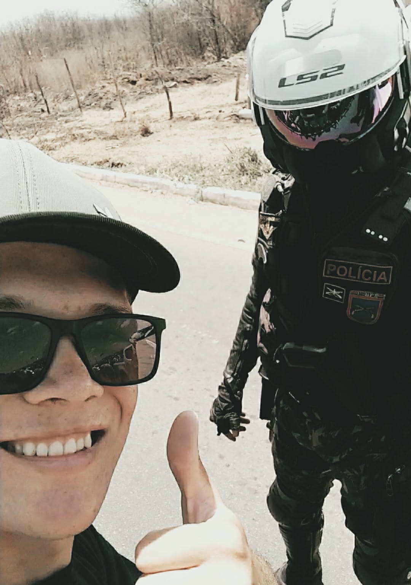
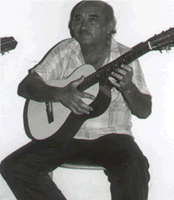
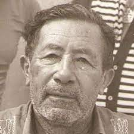
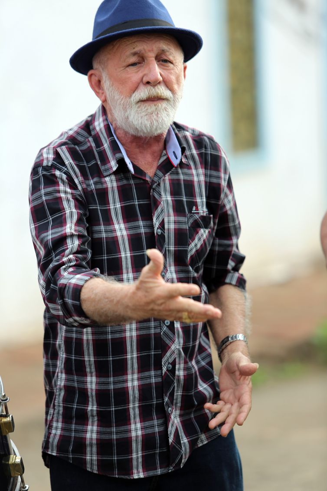

Pagina Pessoal
Biografia

Marcos Antonio Laureano de Lima nascido na cidade de Tuparetama, interior de Pernanbuco, filho de Maria do Socorro Laureano da Silva Lima e Pedro Marçal Lima , foi criado na cidade de São josé do Egito , onde viveu até os 19 anos, logo apósse mudou para a capital Recife com intuito cursar Ciências da Computação na Universidade Federal de Pernambuco.
@marcos_laureanol
Principal Hobbie
Apreciar a cultura popular nordestina(com ênfase na produção poetica do Vale do Pajeú)
Devido a grande influência da cultura regional, busco enaltecer as produções poéticas dos catadores da minha região.
Balcão da Budega
"O poeta é aquele que tira de onde não tem e bota onde não cabe"
(Pinto de Monteiro)
Pinto do Monteiro
")
Severino Lourenço da Silva Pinto, conhecido como Pinto do Monteiro foi um poeta popular, Compositor, cantador e improvisador brasileiro. Filho de uma doméstica com um tropeiro, chegou a trabalhar como vaqueiro, vendedor de cuscuz, auxiliar de enfermagem e guarda do serviço contra a malária.(1895 a 1990)
Essa palavra saudade
Conheço desde criança.
Saudade de amor ausente
Não é saude é lembrança
Saudade só é saudade
Quando morre a esperança
Para conhecer mais do poeta Clique aqui.
Lourival Batista
")
Lourival Batista Patriota também conhecido por Louro do Pajeú foi um repentista brasileiro. Considerado o rei do trocadilho, concluiu o curso ginasial em 1933, no Recife, de onde saiu para fazer cantorias. Foi um dos mais afamados poetas populares do nordeste brasileiro.(1915 a 1992)
É muito ruim ser pobre
Pra mim é um mal perene
Trocando o P pelo N
É muito alegre ser nobre
Sendo ‘c’, é cobre
Cobre figurado é ouro
Botando T fica touro
Tiro a carne e vendo a pele
O T sem o troço é L
Termino só sendo Louro.
Para conhecer mais do poeta Clique aqui.
Manuel Xudu
")
O grande poeta Manoel Xudu Sobrinho, Manoel Xudu, ou, simplesmente, Xudu, nasceu no município de Pilar, no Estado da Paraíba, em 15 de março de 1932 e faleceu em 1985, em Salgado de São Félix, onde residia.(1932 a 1985)
Minha mãe que me deu papa
Me deu doce, me deu bolo
Mamãe que me deu consolo
Leite fervido e garapa
Minha mãe me deu um tapa
E depois se arrependeu
Beijou aonde bateu
Acabou a inchação
Quem perde mãe tem razão
De chorar o que perdeu.
Para conhecer mais do poeta Clique aqui.
Jó Patriota

Jó Patriota de Lima, filho de Geminiano Joaquim de Lima e Rita Neves da Silva, nasceu em 01 de janeiro de 1929 no sítio Cacimbas, localidade de Itapetim que na época pertencia a Sâo José do Egito. Viveu durante a infância na zona rural com os seis irmãos.(1929 a 1992)
Passa dia por mês e mês por ano
Passa ano por era, era por fase
Nessa base tão triste eu vejo a base
Do destino passar de plano em plano
Com a mão da saudade o desengano
Passa dando um adeus fazendo um S
Vem a mágoa o prazer desaparece
Quando chega a velhice, foge a graça,
Passa tudo na vida, tudo passa,
Mas nem tudo que passa a gente esquece.
Para conhecer mais do poeta Clique aqui.
Cancão

João Batista de Siqueira, mais conhecido como Cancão, foi um poeta brasileiro. Em 1950, deixou de participar de cantorias de viola e dedicou-se apenas à poesia escrita.(1912 a 1982)
Testemunhas seculares
Do outro lado do rio
Rumor das brisas lunares
Das calmas noites de estio
Foram vigia das féras
Venceram eras e eras
Se tornaram centenários
E em seus mulícios tristonhos
Que na douçura dos sonhas
De mil poemas lendários.
Para conhecer mais do poeta Clique aqui.
Otacílio Batista
")
Otacílio Batista foi um cantador, violeiro e repentista brasileiro. Filho de Raimundo Joaquim Patriota e Severina Guedes Patriota, ambos paraibanos, Otacílio participou pela primeira vez de uma cantoria em 1940, durante uma Festa de Reis em sua cidade natal.(1923 a 2003)
A mulher não vem pedir
Migalha nem proteçao
Nem confersar seus pecados
Ajoelhada no chão
Peca quem nega o direto
A ela e seu coração.
Para conhecer mais do poeta Clique aqui.
Zé Catota
")
José Lopes Neto nasceu no Riachão, município de São José do Egito, em 05 de agosto de 1917 e faleceu 22 de abril de 2009, com 92 anos de idade.(1917 a 2009)
Fiquei como um telegrama
Mundo acima e mundo abaixo
Como pássaro que canta
Na barreira do riacho
Ninguém sabe de onde vem
O que eu desejo não tem
O que eu procuro não acho.
Para conhecer mais do poeta Clique aqui.
João Furiba
")
João Furiba nasceu em Taquaritinga do Norte, Pernambuco, mas viveu boa parte de sua vida em Sumé, no Cariri da Paraíba. Há algum tempo ele vivia na cidade de Triunfo, no Sertão da Paraíba, com a sua terceira esposa.(1919 a 2019)
Eu admiro é a barata
Saber voar e correr,
Chega na lata de açúcar
Bate um baião pra comer,
O que come é muito pouco,
Mas bota o resto a perder.
Para conhecer mais do poeta Clique aqui.
Zé Limeira
")
Zé Limeira foi um cordelista/repentista brasileiro. Ficou conhecido como Poeta do Absurdo. Nasceu no sítio Tauá, em Teixeira, considerado o principal reduto de repentistas no século XIX. Os temas que abordava em suas poesias e repentes eram variados e chegavam, muitas vezes, ao delírio.(1886 a 1954)
Pedro Álvares Cabral,
Invento do telefone,
Começou a tocá trombone
Na volta de Zé Leal
Mas como tocava mal
Arranjou dois instrumento
Daí chegou um sargento
Querendo enrabar os três.
Quem tem razão é o freguês
Diz o Novo Testamento.
Para conhecer mais do poeta Clique aqui.
Bilio de Campina

Severino Xavier de Souza, mais conhecido como Biliu de Campina é um compositor, cantor e advogado brasileiro. Formou-se em direito, pela Universidade Estadual da Paraíba, mas trocou a advocacia pela musica em 1978 quando iniciou a carreira artística, resgatando o forró de raiz.(1949 (idade 73 anos))
Chapéu de couro, caruara, curandeiro
Curumim, cara, carreiro, cravinote e carimã
Coivara, canga, caçuleta, caipira
Corisco, cara, cupira, casal de carapanã
Conrado, corre chama comadre Cristina
Camilo da Carolina e o Chagas Camaleão
Chegou Chiquito cabra chato pra chuchú
Com cara de cururu, cantando o côco do cão.
Para conhecer mais do poeta Clique aqui.
Leonardo Bastião
)")
Leonardo Pereira Alves, de 78 anos, nascido sem eira nem beira, no sítio Goiana, às margens do rio Pajeú, mas que vem se destacando após o youtuber Bernardo Ferreira, do canal Bisaco do Doido, gravá-lo declamando suas poesias e postá-las nas redes sociais.
Com dez anos eu sabia
O que era verso e rima
Me criei pisando em cima
Da terra da poesia
Fiz glosa e fiz cantoria
Glosei pouco e cantei ruim
Que esse lugar é assim
Pra fazer verso adoidado
Basta ser batizado
Na matriz de Itapetim.
Para conhecer mais do poeta Clique aqui.